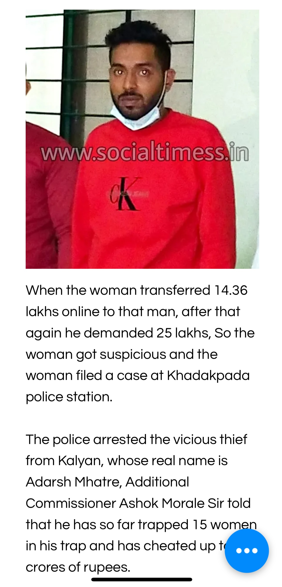
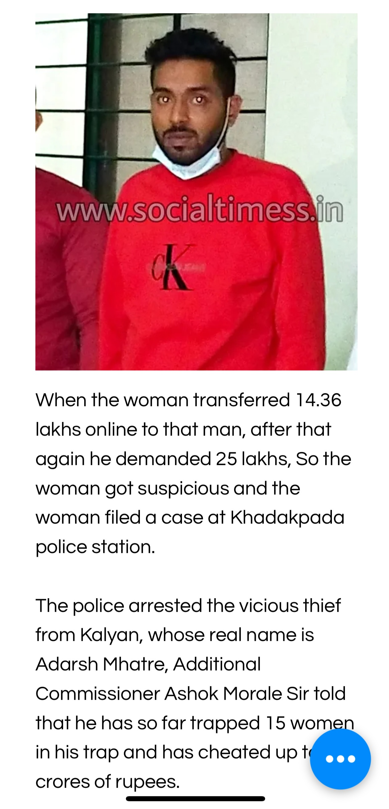

This individual is a scammer who has deceived multiple women under various aliases, including Jayesh Patil, Tanmay Mhatre, Aditya Mhatre, and Navhoosh Mhatre.
His real name is Adarsh Prashant Mhatre, and he is originally from Kegaon, Uran, District Raigad. He has lived in Hashiware, Alibaug (his maternal home), and Bhopal. Currently, he resides in Pune but frequently visits his family and relatives in Turade, Rasayani, and the Panvel Area. To evade the authorities, he often changes his location.
He has multiple legal cases against him and is currently out on bail.
He targets women, especially working professionals in Pune and Mumbai, by impersonating an ISRO scientist, IPS officer, or IAS officer using fake ID cards. After gaining their trust, he deceives them into giving him money. He is a married man with a wife and son who live in Bhopal.
If you have encountered him or fallen victim to his fraud, please report it to the Thane Crime Branch:
This page is dedicated to raising awareness about his fraudulent activities. Stay alert and do not fall for his scams!


 
